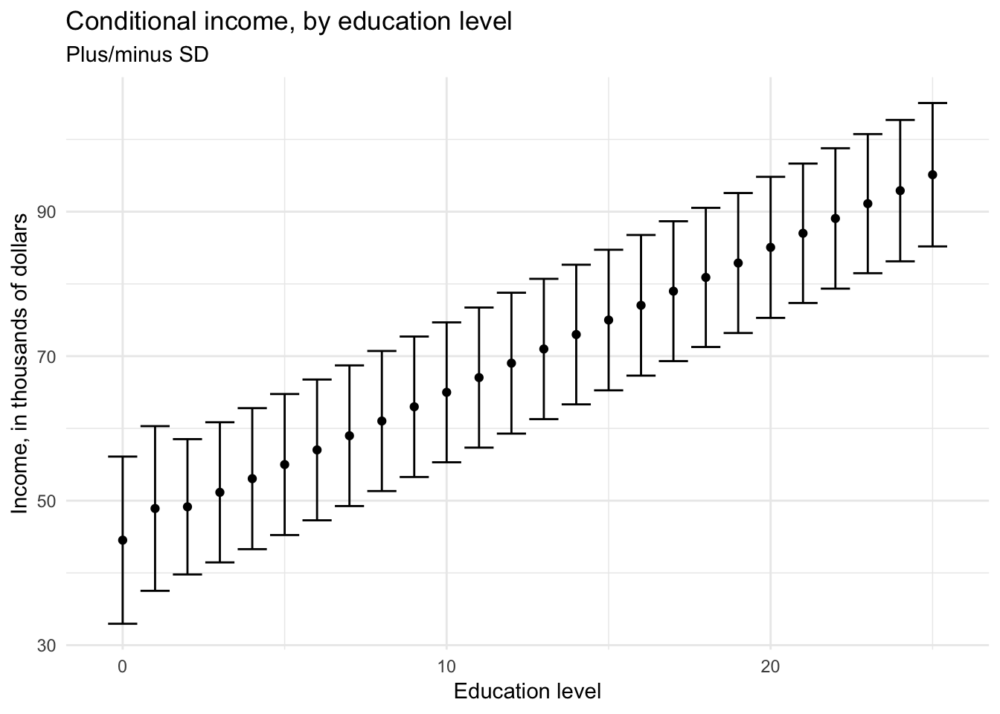

Models, statistical inference, and learning
library(tidyverse)
library(broom)
library(patchwork)
options(digits = 3)
set.seed(1234)
theme_set(theme_minimal())\[\newcommand{\E}{\mathrm{E}} \newcommand{\Var}{\mathrm{Var}} \newcommand{\Cov}{\mathrm{Cov}} \newcommand{\se}{\text{se}}\]
Statistical inference
Statistical inference is the process of using data to infer the probability distribution/random variable that generated the data. Given a sample \(X_1, \ldots, X_n \sim F\), how do we infer \(F\)? Sometimes we want to infer all the features/parameters of \(F\), and sometimes we only need a subset of those features/parameters.
Parametric vs. nonparametric models
A statistical model \(\xi\) is a set of distributions (or densities or regression functions). A parametric model is a set \(\xi\) that can be parameterized by a finite number of parameters. We have seen many examples of parametric models - all the major types of random variables we’ve explored are defined in terms of a fixed number of parameters. For instance, if we assume that the data is generated by a Normal distribution, then the model is
\[\xi \equiv f(x; \mu, \sigma) = \frac{1}{\sigma \sqrt{2 \pi}} \exp \left[ -\frac{1}{2\sigma^2} (x - \mu)^2 \right], \quad \mu \in \Re, \sigma > 0\]
This is an example of a two-parameter model. The density \(f(x; \mu, \sigma)\) indicates that \(x\) is a value of the random variable \(X\), whereas \(\mu\) and \(\sigma\) are parameters that define the model.
In general, a parametric model takes the form
\[\xi \equiv f(x; \theta) : \theta \in \Theta\]
where \(\theta\) is an unknown parameter (or vector of parameters) that can only take values in the parameter space \(\Theta\). If \(\theta\) is a vector but we are only interested in one component of \(\theta\), then we call the remaining parameters nuisance parameters.
A nonparametric model is a set \(\xi\) that cannot be parameterized by a finite number of parameters.
Examples of parametric models
One-dimensional parametric estimation
Let \(X_1, \ldots, X_n\) be independent observations drawn from a Bernoulli random variable with probability \(\pi\) of success. The problem is to estimate the parameter \(\pi\).
Two-dimensional parametric estimation
Suppose that \(X_1, \ldots, X_n \sim F\) and we assume that the PDF \(f \in \xi\) where \(\xi \equiv f(x; \mu, \sigma) = \frac{1}{\sigma \sqrt{2 \pi}} \exp \left[ -\frac{1}{2\sigma^2} (x - \mu)^2 \right], \quad \mu \in \Re, \sigma > 0\). In this case, there are two parameters, \(\mu\) and \(\sigma\). The goal is to estimate the parameters from the data. If we are only interested in estimating \(\mu\) (which is generally the case for inferential methods such as linear regression), then \(\mu\) is the parameter of interest and \(\sigma\) is a nuisance parameter.
Nonparametric density estimation
Let \(X_1, \ldots, X_n\) be independent observations from a cumulative distribution function (CDF) \(F\) and let \(f = F'\) be the probability density function (PDF). Suppose we want to estimate the PDF \(f\). It is not possible to estimate \(f\) assuming only that \(F \in \xi_{\text{ALL}}\) where \(\xi_{\text{ALL}} = \{\text{all CDF's} \}\) – that is, the sample space includes an infinite range of possible functions for the CDF. Instead, we need to assume some smoothness on \(f\). We might assume that \(f \in \xi = \xi_{\text{DENS}} \cap \xi_{\text{SOB}}\) where \(\xi_{\text{DENS}}\) is the set of all PDFs and
\[\xi_{\text{SOB}} \equiv f: \int (f''(x))^2 dx < \infty\]
\(\xi_{\text{SOB}}\) is a class called a Sobolev space, which is a set of functions that are the antiderivative of the square of the second derivative of \(f\). In layman’s terms, these are a group of functions that are not “too wiggly”. The general form to calculate the density estimate is:
\[g(x) = \frac{1}{nh} \sum_{i = 1}^n f(x)\]
where \(n\) is the number of observations, \(h\) is the bandwidth, and \(f(z)\) is a function drawn from the Sobolev space. There are many different functions that fall within the Sobolev space. For example, the Gaussian kernel
\[f(x) = \frac{1}{\sqrt{2 \pi}}\exp\left[-\frac{1}{2} x^2 \right]\]
is one such function. Note its strong relation to the Guassian (Normal) distribution.
infant <- read_csv("data/infant.csv") %>%
# remove non-countries
filter(is.na(`Value Footnotes`) | `Value Footnotes` != 1) %>%
select(`Country or Area`, Year, Value) %>%
rename(country = `Country or Area`,
year = Year,
mortal = Value)## Parsed with column specification:
## cols(
## `Country or Area` = col_character(),
## Subgroup = col_character(),
## Year = col_integer(),
## Source = col_character(),
## Unit = col_character(),
## Value = col_integer(),
## `Value Footnotes` = col_integer()
## )ggplot(infant, aes(mortal)) +
geom_histogram(bins = 30, boundary = 0) +
labs(title = "Histogram of infant mortality rate for 195 nations",
subtitle = "30 bins, origin = 0",
x = "Infant mortality rate (per 1,000)",
y = "Frequency")x <- rnorm(1000)
{
qplot(x, geom = "blank") +
stat_function(fun = dnorm) +
labs(title = "Gaussian (normal) kernel",
x = NULL,
y = NULL)
} +
{
ggplot(infant, aes(mortal)) +
geom_density(kernel = "gaussian") +
labs(title = "Infant mortality rate for 195 nations",
x = "Infant mortality rate (per 1,000)",
y = "Density")
}
Now we have a much smoother density function. Another such function is the rectangular (uniform) kernel:
\[f(x) = \frac{1}{2} \mathbf{1}_{\{ |x| \leq 1 \} }\]
where \(\mathbf{1}_{\{ |x| \leq 1 \} }\) is an indicator function that takes on the value of 1 if the condition is true (\(|x| \leq 1\)) or 0 if the condition is false. This is also known as the naive density estimator. Again, notice its similarities to the uniform distribution.
x <- runif(1000, -1.5, 1.5)
x_lines <- tribble(
~x, ~y, ~xend, ~yend,
-1, 0, -1, .5,
1, 0, 1, .5
)
{
qplot(x, geom = "blank") +
stat_function(fun = dunif, args = list(min = -1), geom = "step") +
# geom_segment(data = x_lines, aes(x = x, y = y, xend = xend, yend = yend)) +
labs(title = "Rectangular kernel",
x = NULL,
y = NULL)
} +
{
ggplot(infant, aes(mortal)) +
geom_density(kernel = "rectangular") +
labs(title = "Infant mortality rate for 195 nations",
x = "Infant mortality rate (per 1,000)",
y = "Density")
}
# define custom kernel functions
triangular <- function(x) {
(1 - abs(x)) * ifelse(abs(x) <= 1, 1, 0)
}
biweight <- function(x) {
(15 / 16) * (1 - x^2)^2 * ifelse(abs(x) <= 1, 1, 0)
}
epanechnikov <- function(x) {
(15 / 16) * (1 - x^2)^2 * ifelse(abs(x) <= 1, 1, 0)
}
qplot(x, geom = "blank") +
stat_function(aes(color = "Gaussian"), fun = dnorm) +
stat_function(aes(color = "Epanechnikov"), fun = epanechnikov) +
stat_function(aes(color = "Rectangular"), fun = dunif,
args = list(min = -1), geom = "step") +
stat_function(aes(color = "Triangular"), fun = triangular) +
stat_function(aes(color = "Biweight"), fun = biweight) +
scale_color_brewer(type = "qual") +
labs(x = NULL,
y = NULL,
color = NULL) +
theme(legend.position = c(0.04, 1),
legend.justification = c(0, 1),
legend.background = element_rect(fill = "white"))ggplot(infant, aes(mortal)) +
geom_density(aes(color = "Gaussian"), kernel = "gaussian") +
geom_density(aes(color = "Epanechnikov"), kernel = "epanechnikov") +
geom_density(aes(color = "Rectangular"), kernel = "rectangular") +
geom_density(aes(color = "Triangular"), kernel = "triangular") +
geom_density(aes(color = "Biweight"), kernel = "biweight") +
scale_color_brewer(type = "qual") +
labs(title = "Density estimators of infant mortality rate for 195 nations",
x = "Infant mortality rate (per 1,000)",
y = "Density",
color = "Kernel") +
theme(legend.position = c(0.96, 1),
legend.justification = c(1, 1),
legend.background = element_rect(fill = "white"))Parametric vs. nonparametric regression
Suppose we observe pairs of data \((X_1, Y_1), \ldots, (X_n, Y_n)\). \(X\) is called the predictor/regressor/feature/independent variable. \(Y\) is the outcome/response variable/dependent variable. We call \(r(x) = \E(Y | X = x)\) the regression function. If we assume that \(r \in \xi\) where \(\xi\) is finite dimensional, then we have a parametric regression model. OLS is a classic example of parametric regression, where we assume a monotonic, linear relationship between the features and outcome of interest and attempt to estimate the parameter values (coefficients) from the data. Nonparametric regression makes no assumptions about the functional form of \(r(x)\), so \(\xi\) is infinite. While more flexible, this makes estimating the regression model far more difficult.
Suppose we have detailed information on individuals’ wages and education. We don’t have data for the entire population, but we do have observations for one million employed Americans:
n <- 1000000
wage <- data_frame(educ = rpois(n, lambda = 12),
age = rpois(n, lambda = 40),
prestige = rpois(n, lambda = 3)) %>%
mutate(educ = ifelse(educ > 25, 25, educ),
wage = 10 + 2 * educ + .5 * age + 5 * prestige + rnorm(n, 0, 3))
ggplot(wage, aes(wage)) +
geom_histogram(binwidth = 5) +
labs(title = "Histogram of simulated income data",
subtitle = "Binwidth = 5",
x = "Income, in thousands of dollars",
y = "Frequency count")If we want to estimate the average income for any individual in the dataset, let \(X_1, \ldots, X_n \sim F\) where \(X\) is income and it follows some known distribution \(F\). The average value of that random variable \(\mu = \E (X) = \int x F(x) dx\) assuming only that \(\mu\) exists. The mean \(\mu\) (also known as the first moment) can be thought of as a function of \(F\): we can write \(\mu = T(F) = \int x F(x) dx\). In general, any function of \(F\) is called a statistical function. Because the method for calculating the statistical function does not depend on the form of \(F\) itself, it is a nonparametric estimation technique.
If we want to estimate the income for an individual given their education level \((0, 1, 2, \dots, 25)\), we could estimate the conditional distribution of income for each of these values:
\[\mu = E(\text{Income}|\text{Education}) = f(\text{Income}|\text{Education})\]
For each level of education, the conditional (or expected) income would be the mean or median of all individuals in the sample with the same level of education.
wage %>%
group_by(educ) %>%
summarize(mean = mean(wage),
sd = sd(wage)) %>%
ggplot(aes(educ, mean, ymin = mean - sd, ymax = mean + sd)) +
geom_errorbar() +
geom_point() +
labs(title = "Conditional income, by education level",
subtitle = "Plus/minus SD",
x = "Education level",
y = "Income, in thousands of dollars")
wage %>%
filter(educ == 12) %>%
ggplot(aes(wage)) +
geom_density() +
geom_vline(xintercept = mean(wage$wage[wage$educ == 12]), linetype = 2) +
labs(title = "Conditional distribution of income for education = 12",
subtitle = str_c("Mean income = ", formatC(mean(wage$wage[wage$educ == 12]), digits = 3)),
x = "Income, in thousands of dollars",
y = "Frequency count")Imagine instead that we have \(X\) and \(Y\), two continuous variables from a sample of a population, and we want to understand the relationship between the variables. Specifically, we want to use our knowledge of \(X\) to predict \(Y\). Therefore what we want to know is the mean value of \(Y\) as a function of \(X\) in the population of individuals from whom the sample was drawn:
\[\mu = E(Y|x) = f(x)\]
Unfortunately because \(X\) is continuous, it is unlikely that we would draw precisely the same values of \(X\) for more than a single observation. Therefore we cannot directly calculate the conditional distribution of \(Y\) given \(X\), and therefore cannot calculate conditional means. Instead, we can divide \(X\) into many narrow intervals (or bins), just like we would for a histogram. Within each bin we can estimate the conditional distribution of \(Y\) and estimate the conditional mean of \(Y\) with great precision.
If we have fewer observations, then we have to settle for fewer bins and less precision in our estimates. Here we use data on the average income of 102 different occupations in Canada and their relationship to occupational prestige (measured continuously):
# get data
prestige <- read_csv("data/prestige.csv")## Parsed with column specification:
## cols(
## occupation = col_character(),
## education = col_double(),
## income = col_integer(),
## women = col_double(),
## prestige = col_double(),
## census = col_integer(),
## type = col_character()
## )# bin into 5 and get means
prestige_bin <- prestige %>%
mutate(bin = cut_number(income, 6)) %>%
group_by(bin) %>%
summarize(prestige = mean(prestige),
income = mean(income))
# get cutpoints
labs <- levels(prestige_bin$bin)
cutpoints <- c(as.numeric( sub("\\((.+),.*", "\\1", labs) ),
as.numeric( sub("[^,]*,([^]]*)\\]", "\\1", labs) )) %>%
unique %>%
sort %>%
.[2:(length(.)-1)] %>%
as_tibble## Warning in eval(lhs, parent, parent): NAs introduced by coercionggplot(prestige, aes(income, prestige)) +
geom_point(shape = 1) +
geom_line(data = prestige_bin) +
geom_point(data = prestige_bin) +
geom_vline(data = cutpoints, aes(xintercept = value), linetype = 2) +
labs(title = "Naive nonparametric regression",
subtitle = "Bins = 5",
x = "Average income (in dollars)",
y = "Occupational prestige")The \(X\)-axis is carved into 5 bins with roughly 20 observations in each bin. The line is a naive nonparametric regression line that is calculated by connecting the points defined by the conditional variable means \(\bar{Y}\) and the explanatory variable means \(\bar{X}\) in the five intervals.
Just like ordinary least squares regression (OLS), this regression line also suffers from bias and variance. If the actual relationship between prestige and income is non-linear within a bin, then our estimate of the conditional mean \(\bar{Y}\) will be biased towards a linear relationship. We can minimize bias by making the bins as numerous and narrow as possible:
# bin into 50 and get means
prestige_bin <- prestige %>%
mutate(bin = cut_number(income, 51)) %>%
group_by(bin) %>%
summarize(prestige = mean(prestige),
income = mean(income))
# get cutpoints
labs <- levels(prestige_bin$bin)
cutpoints <- c(as.numeric( sub("\\((.+),.*", "\\1", labs) ),
as.numeric( sub("[^,]*,([^]]*)\\]", "\\1", labs) )) %>%
unique %>%
sort %>%
.[2:(length(.)-1)] %>%
as_tibble## Warning in eval(lhs, parent, parent): NAs introduced by coercionggplot(prestige, aes(income, prestige)) +
geom_point(shape = 1) +
geom_line(data = prestige_bin) +
geom_point(data = prestige_bin) +
geom_vline(data = cutpoints, aes(xintercept = value), linetype = 2, alpha = .25) +
labs(title = "Naive nonparametric regression",
subtitle = "Bins = 50",
x = "Average income (in dollars)",
y = "Occupational prestige")But now we have introduced overfitting into the nonparametric regression estimates. In addition, we substantially increased our variance of the estimated conditional sample means \(\bar{Y}\). If we were to draw a new sample, the estimated conditional sample means \(\bar{Y}\) could be widely different from the original model and our resulting estimates of the conditional sample means will be highly variable.
Naive nonparametric regression is a consistent estimator of the population regression curve as the sample size increases. As \(n \rightarrow \infty\), we can shrink the size of the individual intervals and still have sizeable numbers of observations in each interval. In the limit, we have an infinite number of intervals and infinite number of observations in each interval, so the naive nonparametric regression line and the population regression line are identical.
As a practical consideration, if our sample size \(n\) is truly large, then naive nonparametric regression could be a good estimation procedure. However as we introduce multiple explanatory variables into the model, the problem starts to blow up. Assume we have three discrete explanatory variables each with 10 possible values:
\[ \begin{align} X_1 &\in \{1, 2, \dots ,10 \} \\ X_2 &\in \{1, 2, \dots ,10 \} \\ X_3 &\in \{1, 2, \dots ,10 \} \end{align} \]
There are then \(10^3 = 1000\) possible combinations of the explanatory variables and \(1000\) conditional expectations of \(Y\) given \(X\):
\[\mu = E(Y|x_1, x_2, x_3) = f(x_1, x_2, x_3)\]
In order to accurate estimate conditional expectations for each category, we would need substantial numbers of observations for every combination of \(X\). This would require a sample size far greater than most social scientists have the resources to collect.
Let’s return to our simulated wage data. Our dataset contains information on education, age, and job prestige:
ggplot(wage, aes(educ)) +
geom_histogram(binwidth = 1) +
labs(title = "Distribution of simulated wage data",
x = "Education",
y = "Frequency count")ggplot(wage, aes(age)) +
geom_histogram(binwidth = 1) +
labs(title = "Distribution of simulated wage data",
x = "Age",
y = "Frequency count")ggplot(wage, aes(prestige)) +
geom_histogram(binwidth = 1) +
labs(title = "Distribution of simulated wage data",
x = "Job prestige",
y = "Frequency count")Can we estimate naive nonparametric regression on this dataset with \(N = 1,000,000\)?
wage_np <- wage %>%
group_by(educ, age, prestige) %>%
summarize(wage_mean = mean(wage),
wage_sd = sd(wage),
n = n()) %>%
ungroup %>%
complete(educ, age, prestige, fill = list(wage_mean = NA,
wage_sd = NA,
n = 0))
# number of unique combos
wage_unique <- nrow(wage_np)
# n for each unique combo
ggplot(wage_np, aes(n)) +
geom_density() +
labs(title = "Naive nonparametric regression of simulated wage data",
x = "Number of observations for each unique combination",
y = "Density")Even on a dataset with \(1,000,000\) observations, for the vast majority of the potential combinations of variables we have zero observations from which to generate expected values. What if we instead drew \(10,000,000\) observations from the same data generating process?
n <- 10000000
wage10 <- data_frame(educ = rpois(n, lambda = 12),
age = rpois(n, lambda = 40),
prestige = rpois(n, lambda = 3)) %>%
mutate(educ = ifelse(educ > 25, 25, educ),
wage = 10 + 2 * educ + .5 * age + 5 * prestige + rnorm(n, 0, 3))
wage10_np <- wage10 %>%
group_by(educ, age, prestige) %>%
summarize(wage_mean = mean(wage),
wage_sd = sd(wage),
n = n()) %>%
ungroup %>%
complete(educ, age, prestige, fill = list(wage_mean = NA,
wage_sd = NA,
n = 0))
# number of unique combos
wage10_unique <- nrow(wage10_np)
# n for each unique combo
ggplot(wage10_np, aes(n)) +
geom_density() +
labs(title = "Naive nonparametric regression of simulated wage data",
x = "Number of observations for each unique combination",
y = "Density")Unless your dataset is extremely large or you have a small handful of variables with a low number of unique values, naive nonparametric estimation will not be effective.
Point estimates
Point estimation refers to providing a single “best guess” of some quantity of interest. This quantity of interest could be a parameter in a parametric model, a CDF \(F\), a PDF \(f\), a regression function \(r\), or a prediction for a future value \(Y\) of some random variable.
We denote a point estimate of \(\theta\) by \(\hat{\theta}\) or \(\hat{\theta}_n\). Remember that \(\theta\) is a fixed, unknown quantity. The estimate \(\hat{\theta}\) depends on the data, so \(\hat{\theta}\) is a random variable. More formally, let \(X_1, \ldots, X_n\) be \(n\) IID (independently and identically drawn) data points from some distribution \(F\). A point estimator \(\hat{\theta}_n\) of a parameter \(\theta\) is some function of \(X_1, \ldots, X_n\):
\[\hat{\theta}_n = g(X_1, \ldots, X_n)\]
Properties of point estimates
The bias of an estimator is defined as
\[\text{bias}(\hat{\theta}_n) = \E_\theta (\hat{\theta_n}) - \theta\]
When \(\E (\hat{\theta_n}) = 0\), we say that \(\hat{\theta_n}\) is unbiased. Many estimators in statistical inference are not unbiased – with modern approaches, this is sometimes justified. We will see examples of this in the winter quarter. A more preferable requirement for an estimator is consistency: as the number of observations \(n\) increases, the estimator should converge towards the true parameter \(\theta\).
The distribution of \(\hat{\theta}_n\) is called the sampling distribution. The standard deviation of \(\hat{\theta}_n\) is called the standard error:
\[\se = \se(\hat{\theta}_n) = \sqrt{\Var (\hat{\theta}_n)}\]
Frequently the standard error depends on the unknown \(F\). In those cases, we usually estimate it. The estimated standard error is denoted by \(\widehat{\se}\).
The quality of the point estimate is sometimes assessed by the mean squared error (MSE) defined by
\[ \begin{align} \text{MSE} &= \E_\theta (\hat{\theta}_n - \theta)^2 \\ &= \text{bias}^2(\hat{\theta}_n) + \Var_\theta (\hat{\theta}_n) \end{align} \]
- Remember that \(\E_\theta (\cdot)\) refers to expectation with respect to the distribution \(f(x_1, \ldots, x_n; \theta)\) that generated the data. \(\theta\) does not have a distribution - it is a fixed, but unknown, value.
Many estimators turn out to have, approximately, a Normal distribution – another reason why this continuous distribution is so important to statistical inference.
\[\frac{\hat{\theta}_n - \theta}{\se} \leadsto N(0,1)\]
Example: Bernoulli distributed random variable
Let \(X_1, \ldots, X_n ~ \text{Bernoulli}(\pi)\) and let \(\hat{\pi}_n = \frac{1}{n} \sum_{i=1}^n X_i\). Then
\[\E(\hat{\pi}_n) = \frac{1}{n} \sum_{i=1}^n \E(X_i) = \pi\]
so \(\hat{\pi}_n\) is unbiased. The standard error is
\[\se = \sqrt{\Var (\hat{\pi}_n)} = \sqrt{\frac{\pi (1 - \pi)}{n}}\]
which can be estimated as
\[\widehat{\se} = \sqrt{\frac{\hat{\pi} (1 - \hat{\pi})}{n}}\]
Additionally, we have that \(\E_\pi (\hat{\pi}_n) = \pi\) so \(\text{bias} = \pi - \pi = 0\)
\[ \begin{align} \text{bias}(\hat{\pi}_n) &= \E_\pi (\hat{\pi}) - \pi \\ &= \pi - \pi \\ &= 0 \end{align} \]
and
\[\se = \sqrt{\frac{\pi (1 - \pi)}{n}} \rightarrow 0\]
as \(n\) increases. Hence, \(\hat{\pi}_n\) is a consistent estimator of \(\pi\).
Confidence sets
A \(1 - \alpha\) confidence interval for a parameter \(\theta\) is an interval \(C_n = (a,b)\) where \(a = a(X_1, \ldots, X_n)\) and \(b = b(X_1, \ldots, X_n)\) are functions of the data such that
\[\Pr_{\theta} (\theta \in C_n) \geq 1 - \alpha, \quad \forall \theta \in \Theta\]
In other words, \((a,b)\) traps \(\theta\) with probability \(1- \alpha\). We call \(1 - \alpha\) the coverage of the confidence interval.
Caution interpreting confidence intervals
\(C_n\) is random and \(\theta\) is fixed. This is a core assumption of statistical inference and especially critical for frequentist inference. Commonly people use 95% confidence intervals corresponding to \(\alpha = 0.05\). If \(\theta\) is a vector then we use a confidence set (such as a sphere or an ellipse) instead of an interval.
A confidence interval is not a probability statement about \(\theta\) since \(\theta\) is a fixed quantity, not a random variable. Either \(\theta\) is or is not in the interval with probability \(1\). A better definition is:
On day 1, you collect data and construct a 95% confidence interval for a parameter \(\theta_1\). On day 2, you collect new data and construct a 95% confidence interval for a parameter \(\theta_2\). You continue this way constructing confidence intervals for a sequence of unrelated parameters \(\theta_1, \theta_2, \ldots\). Then 95% of your intervals will trap the true parameter value.
Constructing confidence intervals
Because point estimators have an approximate Normal distribution, we can use the Normal distribution to construct confidence intervals relatively easily for point estimates by relying directly on the Normal distribution.
Suppose that \(\hat{\theta}_n \approx N(\theta, \widehat{\se}^2)\). Let \(\Phi\) be the CDF of a standard Normal distribution and let
\[z_{\frac{\alpha}{2}} = \Phi^{-1} \left(1 - \frac{\alpha}{2} \right)\]
That is,
\[\Pr (Z > \frac{\alpha}{2}) = \frac{\alpha}{2}\]
and
\[\Pr (-z_{\frac{\alpha}{2}} \leq Z \leq z_{\frac{\alpha}{2}}) = 1 - \alpha\]
where \(Z \sim N(0,1)\). Let
\[C_n = (\hat{\theta}_n - z_{\frac{\alpha}{2}} \widehat{\se}, \hat{\theta}_n + z_{\frac{\alpha}{2}} \widehat{\se})\]
Then
\[ \begin{align} \Pr_\theta (\theta \in C_n) &= \Pr_\theta (\hat{\theta}_n - z_{\frac{\alpha}{2}} \widehat{\se} < \theta < \hat{\theta}_n + z_{\frac{\alpha}{2}} \widehat{\se}) \\ &= \Pr_\theta (- z_{\frac{\alpha}{2}} < \frac{\hat{\theta}_n - \theta}{\widehat{\se}} < z_{\frac{\alpha}{2}}) \\ &\rightarrow \Pr ( - z_{\frac{\alpha}{2}} < Z < z_{\frac{\alpha}{2}}) \\ &= 1 - \alpha \end{align} \]
For 95% confidence intervals, \(\alpha = 0.05\) and \(z_{\frac{\alpha}{2}} = 1.96 \approx 2\) leading to the approximate 95% confidence interval \(\hat{\theta}_n \pm 2 \widehat{\se}\).
Actual vs. approximate confidence intervals
In the Bernoulli example, let \(C_n = (\hat{\pi}_n - \epsilon_n, \hat{\pi}_n + \epsilon_n)\) where \(\epsilon_n^2 = \frac{\log(\frac{2}{\alpha})}{2n}\). From this,
\[\Pr (\pi \in C_n \geq 1 - \alpha)\]
for every \(\pi\). Hence, \(C_n\) is a precise \(1 - \alpha\) confidence interval.
Compare this instead to an approximate confidence interval constructed using the Normal distribution.
Let \(X_1, \ldots, X_n \sim \text{Bernoulli}(\pi)\) and let \(\hat{\pi}_n = \frac{1}{n} \sum_{i=1}^n X_i\). Then
\[ \begin{align} \Var (\hat{\pi}_n) &= \frac{1}{n^2} \sum_{i=1}^n \Var(X_i) \\ &= \frac{1}{n^2} \sum_{i=1}^n \pi(1 - \pi) \\ &= \frac{1}{n^2} n\pi(1 - \pi) \\ &= \frac{\pi(1 - \pi)}{n} \\ \se &= \sqrt{\frac{\pi(1 - \pi)}{n}} \\ \widehat{\se} &= \sqrt{\frac{\hat{\pi}(1 - \hat{\pi})}{n}} \end{align} \]
By the Central Limit Theorem, \(\hat{\pi}_n \approx N(\pi, \hat{\se}^2)\). Therefore the approximate \(1 - \alpha\) confidence interval is
\[\hat{\pi}_n \pm z_{\frac{\alpha}{2}} \widehat{\se} = \hat{\pi}_n \pm z_{\frac{\alpha}{2}} \sqrt{\frac{\hat{\pi}(1 - \hat{\pi})}{n}}\]
Compared to the precise confidence interval, the Normal-based approximation is shorter but it only has approximately correct coverage. That coverage’s accuracy increases at \(n\) increases.
Hypothesis testing
In hypothesis testing, we start with some default theory – called a null hypothesis – and we ask if the data provide sufficient evidence to reject the theory. If not, we fail to reject the null hypothesis. Frequently the default theory is that the parameter value \(\theta = 0\). This is very much a frequentist approach to evaluating hypotheses.
For example, let
\[X_1, \ldots, X_n \sim \text{Bernoulli}(\pi)\]
be \(n\) independent coin flips. Suppose we want to test if the coin is fair. Let \(H_0\) denote the hypothesis that the coin is fair (\(H_0: \pi = 0.5\)) and let \(H_1\) denote the hypothesis that the coin is not fair (\(H_1: \pi \neq 0.5\)). It seems reasonable to reject \(H_0\) if
\[T = | \hat{\pi}_n - 0.5|\]
is large. The exact value necessary to reject the null hypothesis will be discussed when we focus more on specific hypothesis tests.
Acknowledgements
- Material drawn from All of Statistics by Larry Wasserman
Session Info
devtools::session_info()## Session info -------------------------------------------------------------## setting value
## version R version 3.5.1 (2018-07-02)
## system x86_64, darwin15.6.0
## ui X11
## language (EN)
## collate en_US.UTF-8
## tz America/Chicago
## date 2018-11-13## Packages -----------------------------------------------------------------## package * version date source
## assertthat 0.2.0 2017-04-11 CRAN (R 3.5.0)
## backports 1.1.2 2017-12-13 CRAN (R 3.5.0)
## base * 3.5.1 2018-07-05 local
## bindr 0.1.1 2018-03-13 CRAN (R 3.5.0)
## bindrcpp 0.2.2 2018-03-29 CRAN (R 3.5.0)
## broom * 0.5.0 2018-07-17 CRAN (R 3.5.0)
## cellranger 1.1.0 2016-07-27 CRAN (R 3.5.0)
## cli 1.0.0 2017-11-05 CRAN (R 3.5.0)
## colorspace 1.3-2 2016-12-14 CRAN (R 3.5.0)
## compiler 3.5.1 2018-07-05 local
## crayon 1.3.4 2017-09-16 CRAN (R 3.5.0)
## datasets * 3.5.1 2018-07-05 local
## devtools 1.13.6 2018-06-27 CRAN (R 3.5.0)
## digest 0.6.18 2018-10-10 cran (@0.6.18)
## dplyr * 0.7.6 2018-06-29 cran (@0.7.6)
## evaluate 0.11 2018-07-17 CRAN (R 3.5.0)
## forcats * 0.3.0 2018-02-19 CRAN (R 3.5.0)
## ggplot2 * 3.1.0 2018-10-25 cran (@3.1.0)
## glue 1.3.0 2018-07-17 CRAN (R 3.5.0)
## graphics * 3.5.1 2018-07-05 local
## grDevices * 3.5.1 2018-07-05 local
## grid 3.5.1 2018-07-05 local
## gtable 0.2.0 2016-02-26 CRAN (R 3.5.0)
## haven 1.1.2 2018-06-27 CRAN (R 3.5.0)
## hms 0.4.2 2018-03-10 CRAN (R 3.5.0)
## htmltools 0.3.6 2017-04-28 CRAN (R 3.5.0)
## httr 1.3.1 2017-08-20 CRAN (R 3.5.0)
## jsonlite 1.5 2017-06-01 CRAN (R 3.5.0)
## knitr 1.20 2018-02-20 CRAN (R 3.5.0)
## lattice 0.20-35 2017-03-25 CRAN (R 3.5.1)
## lazyeval 0.2.1 2017-10-29 CRAN (R 3.5.0)
## lubridate 1.7.4 2018-04-11 CRAN (R 3.5.0)
## magrittr 1.5 2014-11-22 CRAN (R 3.5.0)
## memoise 1.1.0 2017-04-21 CRAN (R 3.5.0)
## methods * 3.5.1 2018-07-05 local
## modelr 0.1.2 2018-05-11 CRAN (R 3.5.0)
## munsell 0.5.0 2018-06-12 CRAN (R 3.5.0)
## nlme 3.1-137 2018-04-07 CRAN (R 3.5.1)
## patchwork * 0.0.1 2018-09-06 Github (thomasp85/patchwork@7fb35b1)
## pillar 1.3.0 2018-07-14 CRAN (R 3.5.0)
## pkgconfig 2.0.2 2018-08-16 CRAN (R 3.5.1)
## plyr 1.8.4 2016-06-08 CRAN (R 3.5.0)
## purrr * 0.2.5 2018-05-29 CRAN (R 3.5.0)
## R6 2.2.2 2017-06-17 CRAN (R 3.5.0)
## Rcpp 0.12.19 2018-10-01 cran (@0.12.19)
## readr * 1.1.1 2017-05-16 CRAN (R 3.5.0)
## readxl 1.1.0 2018-04-20 CRAN (R 3.5.0)
## rlang 0.3.0.1 2018-10-25 cran (@0.3.0.1)
## rmarkdown 1.10 2018-06-11 CRAN (R 3.5.0)
## rprojroot 1.3-2 2018-01-03 CRAN (R 3.5.0)
## rstudioapi 0.7 2017-09-07 CRAN (R 3.5.0)
## rvest 0.3.2 2016-06-17 CRAN (R 3.5.0)
## scales 1.0.0 2018-08-09 CRAN (R 3.5.0)
## stats * 3.5.1 2018-07-05 local
## stringi 1.2.4 2018-07-20 CRAN (R 3.5.0)
## stringr * 1.3.1 2018-05-10 CRAN (R 3.5.0)
## tibble * 1.4.2 2018-01-22 CRAN (R 3.5.0)
## tidyr * 0.8.1 2018-05-18 CRAN (R 3.5.0)
## tidyselect 0.2.4 2018-02-26 CRAN (R 3.5.0)
## tidyverse * 1.2.1 2017-11-14 CRAN (R 3.5.0)
## tools 3.5.1 2018-07-05 local
## utils * 3.5.1 2018-07-05 local
## withr 2.1.2 2018-03-15 CRAN (R 3.5.0)
## xml2 1.2.0 2018-01-24 CRAN (R 3.5.0)
## yaml 2.2.0 2018-07-25 CRAN (R 3.5.0)This work is licensed under the CC BY-NC 4.0 Creative Commons License.